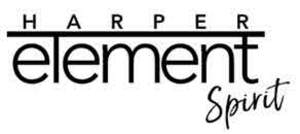

Trade Mark Journal No.2026/012 20 March 2026
UK00004348958 4 March 2026 (9,16,35,41)

- Class 9
- Audio books; podcasts; video podcasts; webcasts; pod scrolls, being downloadable booklets that are viewable on electronic devices; electronic publications (downloadable); printed publications recorded in electronic, magnetic, digital or optical forms; electronic books; digital books; multimedia entertainment goods recorded in electronic, magnetic, digital or optical forms; sound, video and data recordings; downloadable digital media and recordings; downloadable digital media and recordings containing sound, images, text, information, signals or software; computer games; computer games software; computer programs; computer software; computer application software; computer software applications for mobile devices and computers; tapes and cassettes; CDs; laser discs; DVDs; CD-ROMs; audio, video and other media and multimedia, all being readable or downloadable from the Internet or via mobile communications devices; pre-recorded CDs and DVDs; pre-recorded tapes, cassettes, discs and records; tapes, cassettes, discs and records, all bearing or for recordal of sound, video and data; storage and memory devices; data processing equipment; films; animated films; cinematographic films; animated cartoons; animated television programmes; television programmes; radio programmes; sound and music generating apparatus; recording and reproduction apparatus; cases for electronic book readers; musical recordings; digital music (down-loadable) provided on-line from databases or the internet; electronically recorded data; databases; apparatus and instruments all for the recording, reproduction and transmission of sound, images, video and data; computer software development tools for allowing data retrieval, upload, access and management; computer software development tools for social networking and for building social networking applications; parts and fittings for all the aforesaid goods.
- Class 16
- Printed matter; printed publications; printed matter for instructional, educational, teaching and learning purposes; instructional, educational, teaching and learning materials; teaching materials; printed teaching activity guides; printed classroom resources, including books, manuals, dictionaries, booklets, guides, cards, charts and posters; books; fiction books; non-fiction books; exercise books; exercise sheets; activity books, booklets and cards; manuals; teaching guides; workbooks; worksheets; handbooks; dictionaries; vocabulary books; booklets; activity cards; periodical publications; newsletters; magazines; booklets; educational charts; comics; graphic novels; mangas; printed charts; learning progress charts; paper; cardboard; calendars; diaries; note pads; address books; magnetic notice boards for scheduling activities; posters; prints; pictures; images; tags; photographs; gift tags; wrapping paper; occasion cards; greeting cards; postcards; albums; maps; artists implements and materials; stationery; drawing and painting materials; writing instruments and materials; pens; pencils; markers; crayons; cases for pens, pencils, markers and crayons; erasers; rulers; pencil sharpeners; paper coasters; stamps and ink pads; decalcomanias; stickers; book ends; bookplates; book marks; paperweights; paper banners; paper signs; paper charts; plastic materials for packaging (not included in other classes).
- Class 35
- The bringing together, for the benefit of others, of a variety of printed publications, electronic and digital publications, enabling customers to conveniently view and purchase those goods, including online via the Internet; electronic shopping retail services connected with the sale of printed publications, electronic and digital publications; electronic shopping retail services connected with the sale of print-on-demand publications.
- Class 41
- Entertainment; education; training, instructional, tutorial and teaching services; entertainment and educational activities; information, advisory and consultancy services relating to entertainment, education, tuition, teaching, learning and training; electronic publications (not downloadable); providing on-line electronic publications; providing publications, books, electronic books, audio books, texts, periodicals, magazines, instructional materials, teaching materials, learning resources, classroom resources, instructional and teaching publications, including all the aforesaid with embedded images, graphics, text, audio recordings, music, puzzles, games, exercises, videos, visual recordings, animations audio-video recordings or a combination thereof, including all the aforesaid goods electronically, magnetically or optically recorded and readable form; providing games, interactive games, interactive exercises, interactive educational activities, interactive stories, animated stories, animated cartoons, animated educational games, quizzes, educational activities; providing publications, resources, information and digital applications for use in teaching, learning and improvement of literacy, reading, writing and communication skills; publication of digital applications relating to education, tuition, teaching, learning, books, electronic books, interactive books, instructional materials, teaching materials, animated stories, animated cartoons, animated educational games, educational activities, games, quizzes and entertainment; publication of printed matter, publications, books, audio books, texts, magazines, periodicals, instructional and teaching materials, electronic instructional and teaching materials, including all the aforesaid with embedded images, graphics, text, audio recordings, music, puzzles, games, exercises, videos, visual recordings, animations audio-video recordings or a combination thereof, including all the aforesaid goods electronically, magnetically or optically recorded and readable form; publishing services; electronic publishing services; desk top publishing services; electronic desk top publishing; editing of written texts; commissioned writing services; arranging, organising and conducting of activities, contests, competitions, games, quizzes for entertainment, training or educational purposes; arranging, organising and conducting of workshops, symposiums, exhibitions, seminars, tutorials, conferences, talks, presentations, group participation events and training sessions; online publishing of videos, animations, puzzles, games, quizzes, audio recordings, music, audio-visual recordings, images, texts, graphics, charts, relating to books, entertainment, education, training, tuition, teaching and learning; online publishing of multimedia content for entertainment, training and educational purposes; providing digital content for entertainment, training and educational purposes; providing educational activities online; providing teaching, learning and classroom resources from global computer networks, databases, the Internet and mobile applications; information services, including reviews, opinions and recommendations, relating to books and publications; book club services; dissemination of information relating to books; including all the aforesaid services relating to children's stories and educational programs; provision of non-downloadable publications; advisory, consultancy and information services relating to the aforesaid.
HarperCollins Publishers Limited
Representative: Addleshaw Goddard LLP